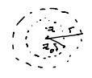

Taylor Series¶
Theorem (Taylor’s Theorem for Holomorphic Functions)
Let \(f:D\to\mathbb C\) be holomorphic and \(D_r(z_0)\subset D\).
Then the power series
Proof:
Fix \(z\in D_r(z_0)\), and \(δ>0\) s.t. \(|z-z_0|<δ<r\).
Let \(γ=z_0+δe^{it}\), \(t\in [0,2π]\) circle of radius \(δ\) around \(z_0\).
By Cauchy Integral Formula:
But
where the sum is locally uniformly convergent for \(z\in D_δ(z_0)\) since \(|z-z_0|<|w-z_0|=δ\).
So
and L.U. on \(D_δ(z_0)\)
So
This is what the term “analytic” means, that a function has a taylor series expansion.
For complex functions this is equivalent to holomorphic (Complex differentiable on open sets)
We also have the converse corollaries of Weierstrass’s Theorem of Holomorphic Convergence
Corollary 1
All power series are holomorphic inside their radii of convergence.
Proof:
Uniform Convergence of Holomorphic Polynomials
Corollary 2
Derivative of a power series is given by term-by-term differentiation:
Proof:
If \(f_n\to f\) uniformly, \(f_n^{(k)}\to f^{(k)}\) uniformly.
Corollary 4
Taylor Series is unique
Proof:
A consequence of Corollary 1 is that radius of convergence is preserved by integration and differentiation.
Example
is the real Taylor series expansion around \(x=0\) of radius 1.
Question: Why radius 1?
Answer 1: Do the ratio or root tests, get 1 as an answer.
Answer 2:
Think of \(\frac{d}{dx}\arctan(x)=\frac{1}{1+x^2}=f(x)\).
If we extend this to a complex function
where are its poles? \(\pm i\).
So we can’t make a circle of radius around 0 larger than 1 where \(f(z)\) is holomorphic. The same is true for \(\arctan(z)\)

Meanwhile, since \(e^z\), \(\sin(z)\), and \(\cos(z)\) are entire, their radii of convergence are \(\infty\).